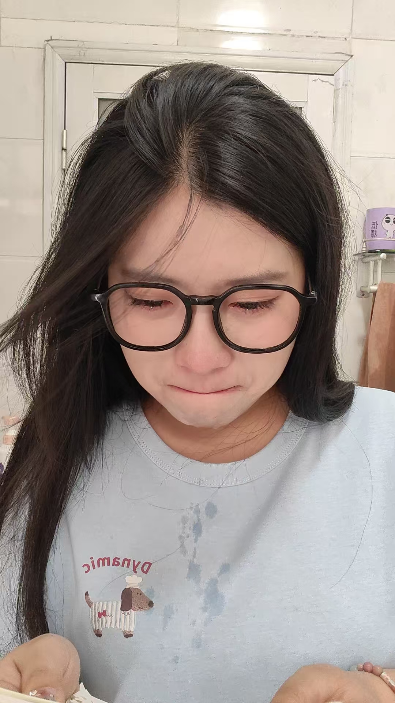
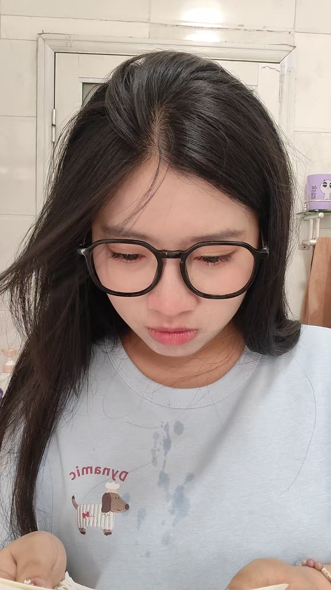
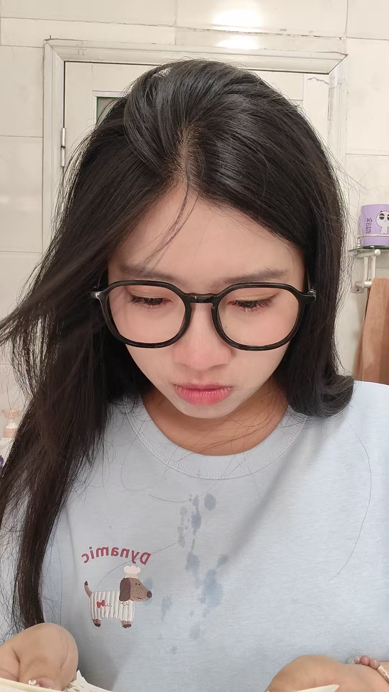
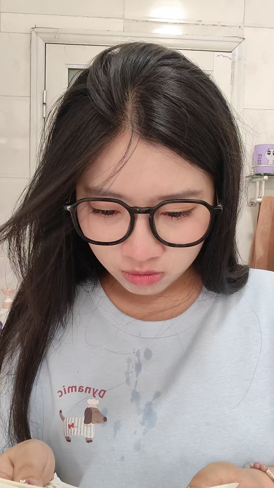
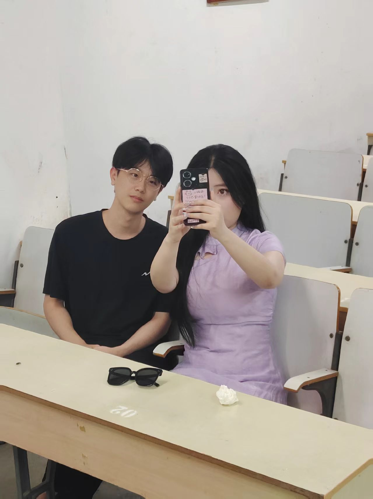
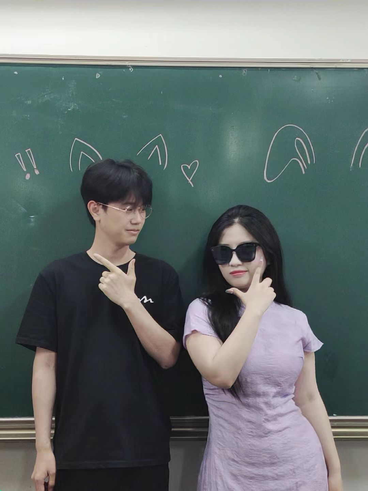
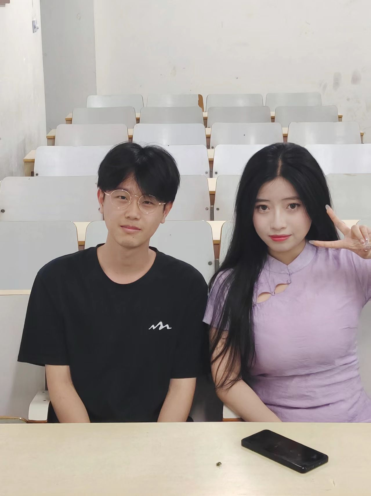

毕业也要快乐！
致我那个爱哭的朋友

 


我就说我有证据吧！
让我写一封离别信，我是写不来的，我也写不来那些煽情字句。而且毕业离别也不一定要伤感，毕竟总有再见的时候，还是要以开心为主的。传统的信你应该收到过不少，所以我给你来一点不一样的（其实是字写得不好看，电脑用多了不会写字了，哈哈哈）。怎么样这样的还是第一次收到吧，而且不用担心搞丢。还得是我呀！
好了言归正传！已经记不清认识你多久了，想来也有个两年了，很幸运能认识你这样一个开朗活泼的女孩。虽然我们没有一起热烈的开始大学生活，但我们却一起盛大的结束了这段旅程（假装很热烈盛大，不然没话说了）。大学生活也算是就此结束了，以后我们都要步入不同的生活了，既然注定要走，那就先祝你能看到更多不同的风景，体验更多不一样的旅程，认识更多知心的朋友，享受未来更加美好的生活。
虽然说你爱哭，但是还是希望你以后继续爱哭，毕竟爱哭的孩子有糖吃，哈哈哈。而且以后能光明正大的哭的机会可不多了，总不能当着学生的面就哇哇哭起来吧，以后只能偷偷的躲起来哭了。有什么事情也不能像在学校一样和室友当面说了，最多只能在微信上面诉说一下，很多事情都得自己抗了。哭一下也是很好的，不要让自己变成一个满是怨气，没有朝气的女孩了，那就不是我认识的那个你了。所以呀，以后也还是要做个爱哭的人。别人都说，爱哭的人都是善良重感情的，在我看来你也确实是如此的。这样好也不好，所以希望你以后遇到的人和事都能像你一样善待他人一样善待你，不然吃亏的肯定是你。
希望你继续爱哭，但你可别真的就变成个爱哭鬼了，还是爱笑更好一些，笑一笑十年少嘛。而且你笑起来那么好看，笑少了岂不是很吃亏，少了那么多靓丽风景。你的那些同事们可就要感到可惜了（手动狗头）。生活本来就很多苦，要多笑笑中和一下，看开一点。带学生，教学生什么的，遇到不爱听，不服管的就不用那么较真，不然最后难受的还是自己。这话说出来确实不太合适，但是前例实在是太多了，有时候自私一点不是坏事，多为自己想一想。你有个好的心情才能更有动力的教更多的学生，你说对吧。所以每天多笑一笑，也好让你的大白牙出来透透气。
我都是想到啥写啥的，没有什么逻辑可言，我怕一停下来就不知道该写什么了。可能你看到这段话的时候我已经回家了，也可能我会写完就发给你，都随缘。你就当我们是在闲聊，我确实是没写过什么离别信的，不过你都说留个当纪念了，我也就只好硬着头皮试一试了。虽然以后不在一个地方了，时间也被工作占据了，但想要见面还是很容易的。所以还是那句话，没必要伤感，快乐最重要。只是短暂的离别而已，没什么大不了的，以后你去我那玩，我请你吃饭，大概率是我亲手做的，如果不是，就当我没说过这句话。我那好玩的地方还是有一些的，住的地方也是有的，都是不用担心的，前提是我在市里。
好了差不多也就这些了，希望下次见到你，你依旧活泼开朗，依旧可爱动人，依旧朝气满满。人生里看似偶然却又必经的告别，无约而至，无人可免，所以不必难过。最后愿所有的美好都可以不期而遇，所有的快乐都可以无约而至，幻想的暴富都可以如约而至，哈哈哈。
——个没有留下姓名的帅哥



愿我们的友谊长存！